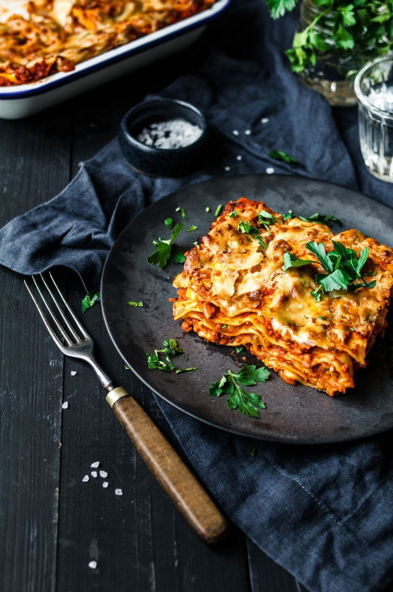

Home
Lasagna

Description
Lasagna is a baked Italian pasta dish layered with flat sheets of pasta, rich meat sauce, and cheese, then finished in the oven until bubbling and golden. It is a classic, oven-baked comfort dish known for its layered structure and deep, well-developed flavor.
Ingredients
- Lasagna pasta sheets
- Ground beef (or minced beef)
- Onion, finely chopped
- Garlic, minced
- Tomato sauce (or crushed tomatoes)/li>
- Tomato paste
- Olive oil
- Salt
- Black pepper
- Dried oregano
- Dried basil
- Ricotta cheese (or cottage cheese, depending on style)
- Mozzarella cheese, shredded
- Milk (optional, if making a béchamel-style layer)
Steps
- Heat olive oil in a pan and sauté chopped onions until soft. Add garlic and cook briefly.
- Add ground beef and cook until browned, breaking it up as it cooks.
- Stir in tomato paste and tomato sauce, then season with salt, pepper, oregano, and basil. Let it simmer.
- In a baking dish, spread a thin layer of meat sauce on the bottom.
- Add a layer of lasagna sheets over the sauce.
- Spread ricotta cheese, then more meat sauce, and sprinkle mozzarella.
- Repeat the layering process until ingredients are used up, finishing with sauce and a generous layer of mozzarella and parmesan on top.
- Bake in a preheated oven at 180°C (350°F) for about 30–40 minutes, until bubbling and golden on top.
- Let it rest for 10–15 minutes before serving so it sets properly.